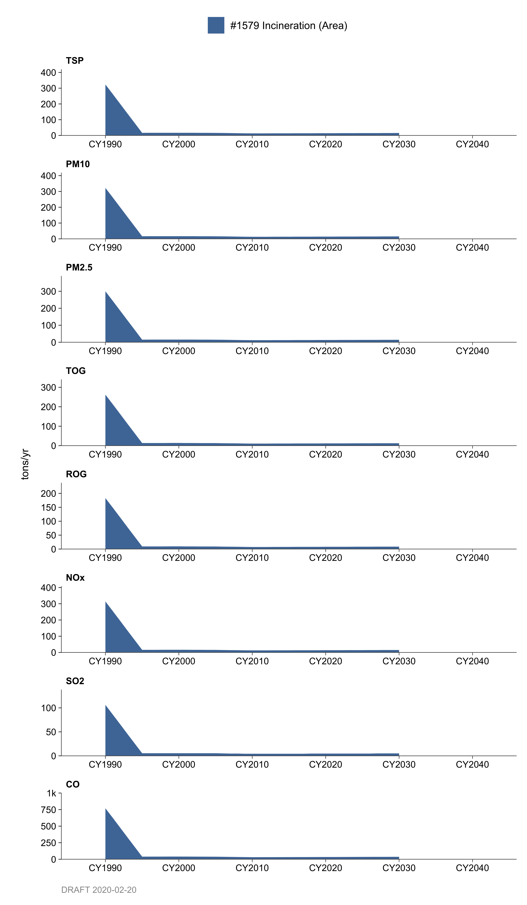
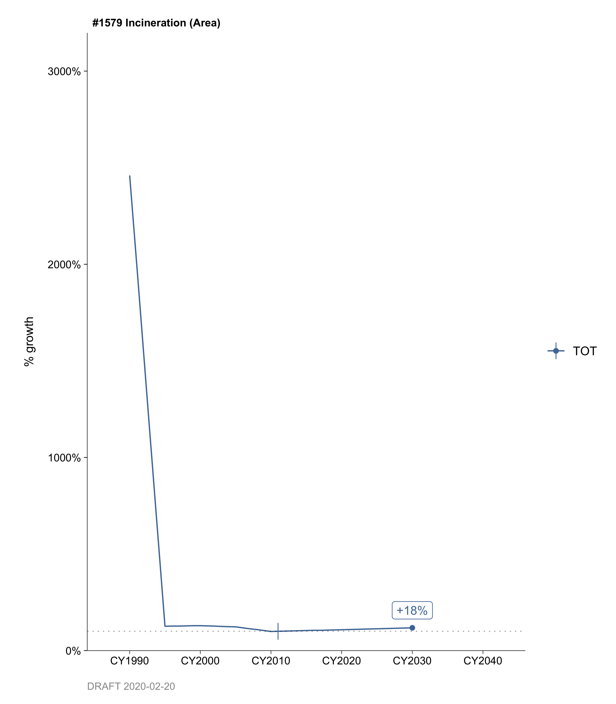
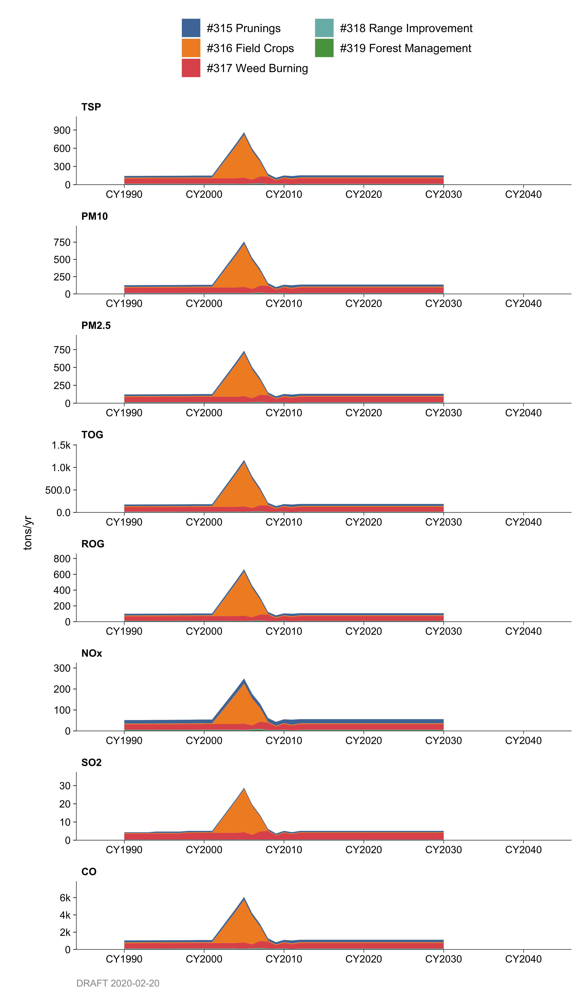
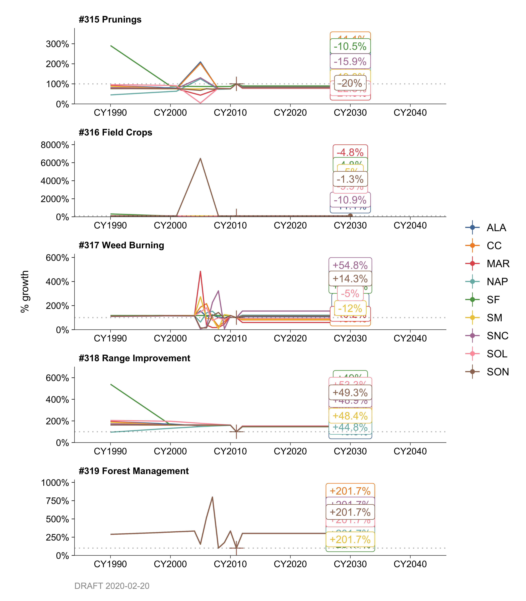

Chapter 8 Burning of Waste Material
8.1 Resource Recovery
8.1.1 Emissions
Introduction
There were no sources operating within this category. Years ago, some permit applications for proposed resource recovery facilities had been submitted to the District for evaluation. None apparently completed the permit evaluation process (i.e., received a Permit to Operate) and none were operating. Consequently, there were no emissions for Category 313.
Methodology
There were no sources operating within this category, therefore no reported emissions.
In general, the District collects fuel usage data each year on a source-by-source basis from point source facilities operating in the Bay Area. Emissions are calculated using fuel usage data and emission factors in the database. Emission and control factors used are either source specific as reported by the plants or general factors, i.e., from the Environmental Protection Agency (EPA); the U.S. Department of Energy’s (DOE’s) Energy Information Administration (EIA); California Energy Commission (CEC) etc.
8.1.2 Trends
History
There is no historical data for this category.
Growth
No sources are projected to operate in this category.
Control
No sources are subject to any combustion rules.
By: Sukarn Claire Date: January 2014 Base Year: 2011
8.2 Incineration
8.2.1 Emissions
Introduction
These categories estimates criteria pollutant (particulate, organic, NOx, SOx, and CO) and greenhouse gas (GHG) emissions (Biogenic-CO2, CH4, and N2O) from waste material combustion at dwellings (e.g., in fireplaces and apartment house incinerators), commercial firms (e.g., in crematories and pathological incinerators), and industrial plants (e.g., in incinerators for waste disposal, reduction or preparation for recycling operations). Category 314 accounts for emissions from point sources in the Air District and emissions for category 1579 were obtained from area sources.
Carbon Dioxide emissions from this category are considered to be biogenic emissions. Biogenic Carbon Dioxide (Bio-CO2) emissions are a subset of total CO2 emissions which are emitted from materials that are derived from living cells, excluding fossil fuels, limestone and other materials that have been transformed by geological processes. Bio- CO2 originates from carbon that is present in materials such as wood, paper, vegetable oils and food, animal, and yard waste.
These categories do not include emissions from the combustion of any “auxiliary fuel” (e.g. natural gas or fuel oil) used to maintain the elevated temperatures needed to promote combustion of the waste material being incinerated (Emissions from such “auxiliary fuels” are covered in categories #307, #309, #1590 and #1591). These categories also do not include emissions from solid fuel combustion for heating, cooking, or recreational purposes, which is covered in category #289.
Methodology
Point Sources
The District updates the point source (Category 314) data each year on a source-by- source basis using as input the following:
Process material throughputs as reported by the plants.
Emissions factors (these may be source specific as reported by the plants or general factors, i.e. from the EPA).
Emissions control factors (device-specific or general - these may be supplied by the plants also).
Area Sources
Area source emissions for category 1579 were calculated based on an estimated household waste generated in the Bay Area. Most of the household waste in the Bay Area is collected and disposed of at the waste landfills. About a third of a percent of the total waste generated the Bay Area is assumed to be burnt through illegal fires. The throughput (tons/year) was estimated by multiplying the Bay Area population by an average amount of waste production per resident. An average residential daily waste production of 1.6 pounds/person/day was used for the Bay Area. The residential daily waste production data was obtained from the California Integrated Waste Management Board for the year 1998.
The emission factors for category 1579, in pounds per ton (Lb/Ton) of waste materials combusted are shown below.
| category | CH4 | CO | CO2_bio | N2O | NOx | PM | SO2 | TOG |
|---|---|---|---|---|---|---|---|---|
| 1579 | 1.476 | 6.4 | 1999 | 0.0022 | 2.61 | 2.69 | 0.882 | 2.18 |
Emission factors were developed based on type of materials commonly disposed of in this manner. EPA’s document AP-42 contains information on combustion of waste materials. The fuel specific emission coefficients for GHGs were obtained from the U.S. Department of Energy’s (DOE’s) Energy Information Administration (EIA), the U.S. Environmental Protection Agency’s (EPA’s) document AP-42, and the California Energy Commission (CEC).
8.2.2 Trends
History

Historical emission trends followed area population growth.
Growth

It was assumed that annual emission trends for waste burning would follow population growth in the Bay Area. The population growth data was obtained from the Association of Bay Area Government’s (ABAG’s) 2009 “Projections” reports.
Control
The District Regulation 9 controls emissions of NOx and SOx from combustion of solids.
By: Sukarn Claire Date: January 2014 Base Year: 2011
8.3 Planned Agricultural Burning
8.3.1 Emissions
Introduction
These area source categories estimate criteria pollutant (particulate, organic, NOx, SOx, and CO) and greenhouse gas emissions (Biogenic-CO2, CH4, and N2O) resulting from managed burning of agricultural and forest debris in the San Francisco Bay Area. Categories 315, 316, 317, 318, and 319 account for emissions from open burning of orchard prunings (such as grape vines, apples, and olives), field crops (such as wheat and oats), weeds (such as ditch and canal bank, and marsh burning), range improvement (such as chaparral and grass land burning) and forest debris, respectively.
Carbon Dioxide emissions from these categories are considered to be biogenic emissions. Biogenic Carbon Dioxide (Bio-CO2) emissions are a subset of total CO2 emissions which are emitted from materials that are derived from living cells, excluding fossil fuels, limestone and other materials that have been transformed by geological processes. Bio- CO2 originates from carbon that is present in materials such as wood, paper, vegetable oils and food, animal, and yard waste.
Methodologies
Annual activity or waste material burn information for these categories was obtained from the burn permits issued by the District’s Enforcement Division for each county. Information on amounts of waste materials burned was provided to the District in various units such as acres, tons, pounds, and cubic yards. By applying the crop specific fuel loading factors and other conversion units, all burn activity was converted to tons of material burned per year.
Emissions were calculated by multiplying the activity (Tons/Year) for a given category by its composite emission factor (Lb/Tons). Composite emission factors were developed using crop specific emission factor data from the California Air Resources Board (CARB) and the Environmental Protection Agency (EPA). Background information for emission factors and fuel loading is explained in the CARB memo, the Agricultural Burning Emission Factors dated August 17, 2000. Emission factors for these categories in pounds per ton (Lb/Ton) are shown below.
| category | CH4 | CO | CO2_bio | N2O | NOx | PM | SO2 | TOG |
|---|---|---|---|---|---|---|---|---|
| 315 | 0.14 | 70.95 | 173.84 | 0.35 | 5.21 | 8.740000 | 0.17 | 11.69 |
| 316 | 5.40 | 123.90 | 120.80 | 0.24 | 4.80 | 17.790001 | 0.60 | 24.57 |
| 317 | 3.00 | 114.00 | 120.00 | 0.24 | 4.82 | 16.167000 | 0.64 | 18.83 |
| 318 | 4.40 | 114.00 | 147.30 | 0.30 | 4.50 | 16.180000 | 0.60 | 18.80 |
| 319 | 5.70 | 66.00 | 173.84 | 0.35 | 5.20 | 8.120001 | 0.10 | 11.06 |
Sample Equations
\[ \text{Activity (ton/yr)} = \text{Crop Area (acre/yr)} \times \text{Fuel Loading (ton/acre)} \] \[ \text{Emissions} = \text{Activity} \times \text{Emission Factor} \]
Example for PM Emissions, Field Crops, Category 316
\[ \text{Activity} = 1600 \text{ (ton/yr)} \] \[ \text{PM Emission Factor} = 17.8 \text{ (lb/ton)} \]
\[ \text{PM Emissions} = 1600 \text{ (ton/yr)} \times 17.8 \text{ (lb/ton)} \times \frac{1 \text{ ton}}{2000 \text{ lb}} = 14.24 \text{ (ton/yr)} \]
County Distribution
Distribution of emissions into counties is based on amounts of material burnt in each county.
Monthly Variation
Monthly distribution for all categories was made proportional to an average burn data reported on monthly basis.
8.3.2 Trends
History

The 1981 emissions and tonnage burned data was used to develop emission factors for base years 1987 and 1990. Prior to base year 2002, historical emission trends were based on Agriculture Dollar Output.
Growth

Emission projections are based on previous five year average activity for each category.
By: Sukarn Claire Date: January 2014 Base Year: 2011